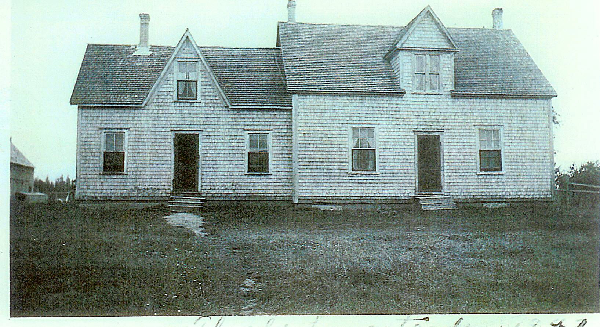

The Family Chronicle
No. 85 December 6, 2004
____________________________________________________________________

In my day, this was the home of Uncle Jim and Aunt Kate Watling and currently is the home of Neil and Anna Watling. It probably was built by my Great Grandparents, John (1817-1900) and Elspeth (1821-1907) (Jardine) MacDonald. In 1901, Elspeth turned over the property to her daughter, Grace, and her husband, Jubal Watling in return for a lifelong home and care. Before this, Jubal and Grace had been living in Upper Black River at the Meadows. I’m wondering if the section to the left was the original house with the other section added later. My mother, Jane, would have been 11 years when the family moved to this home.
Descendants of Jubal Watling
1. JUBAL1 WATLING1. He married SUSAN LEACH1 November 10, 1814 in Metfield, Suffolk County, England.
Notes for JUBAL WATLING:
Recent information from a number of sources cause me to make a number of changes in information about Jubal and his immediate family. While I found some Watlings in PEI, based on my examination it is possible but unlikely that our Jubal was one of them. It is highly likely that there were two Emilys, the first Emily died young, the second Emily is the Emma who married William Eddy of Bathurst, Susanna born March 31, 1822 (Christened May 1, 1823) in Syleham and was Christened on May 1, 1823; I find it unusual that Susannah was younger than brothers Jubal and William, but was christned separately and a few months before the boys were christened.
It is unclear if Jubal and Susan Leach came to Canada. Some records suggest if so, some of my dates are likely wrong. Because there were potentially three Jubals in Black River, land records are also difficult to assign. A Jubal Watling appears to have been granted 50 acres of land on the south side of the Black River in 1851; Jubal Watling, Jr. received a grant of land in the Meadows in 1884. Which Jubal is which is not clear.
Here is now what I believe about Jubal and his family:
More About JUBAL WATLING:
Baptism: August 17, 1823, Syleham, Suffolk, England
Children of JUBAL WATLING and SUSAN LEACH are:
i. MARY ANN2 WATLING1, b. 1816, Syleham, Suffolk, England; m. WILLIAM MAXWELL1.
Notes for WILLIAM MAXWELL:
No children
ii. EMILY EMMA WATLING1, b. 1819, Suffolk, England; d. March 28, 1896; m. WILLIAM EDDY1; b. April 20, 1814, County Cork, Ireland; d. May 25, 1893, Bathurst, NB.
Notes for EMILY EMMA WATLING:
No children; adopted a boy; lived in Bathurst, NB, I believe that Emily and Emma are the same person.
More About EMILY EMMA WATLING:
Burial: United Church Cemetery, Bathurst.
Notes for WILLIAM EDDY:
The Nipisiquit libary carries the history of the Eedy family.
iii. JUBAL WATLING1, b. January 21, 1821, Syleham, Suffolk, England1; d. 1900, Black River, NB1; m. CHRISTINA MACNAUGHTON1, Abt. 1845; b. Abt. 18231; d. October 25, 19011.
More About JUBAL WATLING:
Baptism: August 7, 1823, Syleham, Suffolk, England
Notes for CHRISTINA MACNAUGHTON:
Some census records show born in Scotland and others born in NB; 1851 cnsus shows birth as Oct. 10, 1822
iv. SUSANNAH WATLING, b. March 31, 1822, Syleham, Suffolk, England.
More About SUSANNAH WATLING:
Christening: May 1, 1823
v. WILLIAM WATLING1, b. Abt. 1822, Syleham, Suffolk, England; m. MARY MACNAUGHTON1, July 27, 1847; b. Abt. 1822.
Notes for WILLIAM WATLING:
Census of 1851 shows a "step-brother" (presumably a step-son) named Henry aged 14, living in the household.
vi. JOHN WATLING, b. July 14, 1823, Syleham, Suffolk, England; d. 1824, Syleham, Suffolk, England.
More About JOHN WATLING:
Christening: August 7, 1823, Syleham, Suffolk, England
vii. JOHN WATLING, b. 1825.
viii. GEORGE WATLING, b. Abt. 1826, Syleham, Suffolk, England; d. USA (?).
Notes for GEORGE WATLING:
Not shown on original records; believed to have stayed in Prince Edward Island, moved to USA, married and had 2 daughters.
The Chronicle is an occasional newsletter published by Don Glendenning and posted on the family website3. It is intended to share information about my family, community and the times in which I grew up. While every effort is made to be accurate, errors are likely to occur. Comments, enquiries and information may be sent to 62 Queen Elizabeth Drive, Charlottetown, PEI, C1A 3A9. Tel:902 892 5859. Email: dglende@auracom.com Web: www.glendenning.net